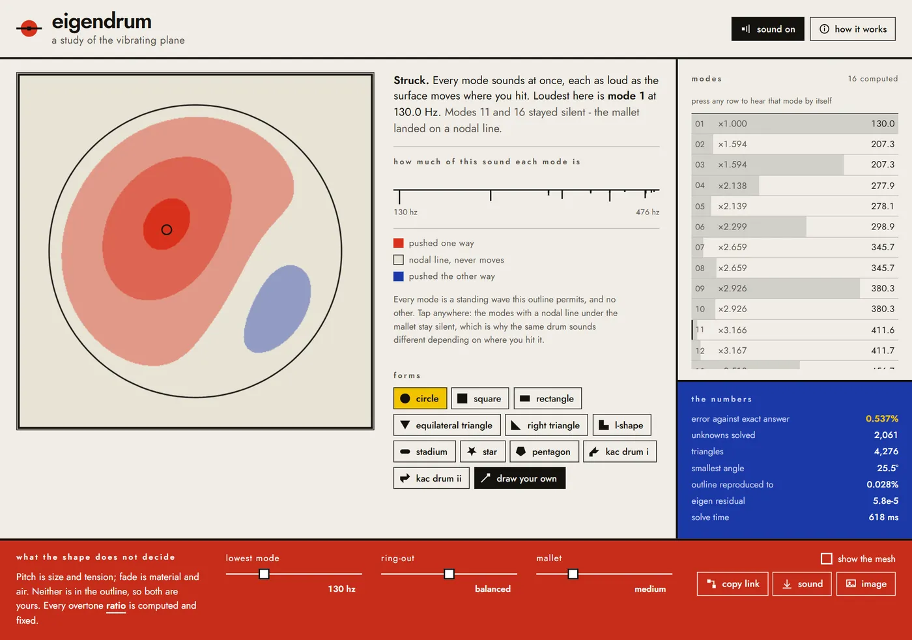
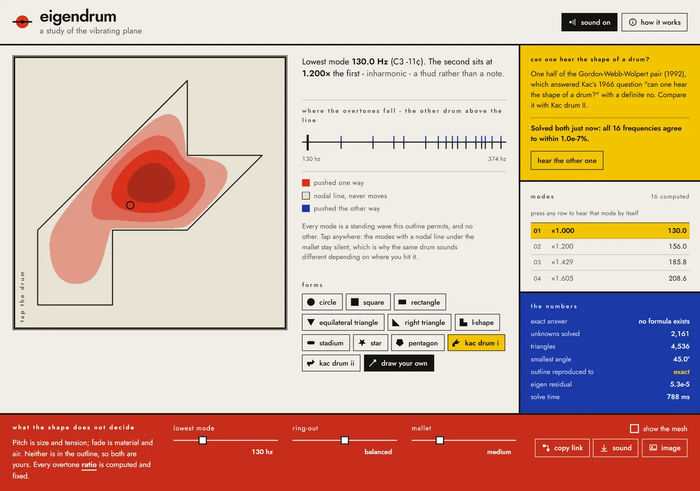

Overview
Eigendrum is a zero-dependency web application that turns any hand-drawn polygon into an acoustically accurate drum membrane. It discretizes the drawn region, solves the 2D Dirichlet eigenvalue problem for the Laplace operator with linear P1 finite elements, and synthesizes the resulting acoustic overtones in real time using the Web Audio API.
No sample libraries, audio recordings, or hand-tuned wavetable oscillators are used. Every harmonic and non-harmonic partial is computed directly from boundary geometry. A drum with 2,051 unknowns meshes and solves in about 800 ms in an asynchronous Web Worker with zero backend dependencies and no WebAssembly runtime.

Mark Kac's Problem & Computational Proof
In 1966, mathematician Mark Kac published "Can One Hear the Shape of a Drum?" in the American Mathematical Monthly, asking whether the spectrum of eigenvalues of the Dirichlet Laplacian uniquely identifies the shape of a 2D planar domain.
In 1992, Carolyn Gordon, David Webb, and Scott Wolpert proved the answer is negative by constructing pairs of non-isometric polygons that share identical Laplace spectra. Eigendrum incorporates both shapes as Kac drum I (hook) and Kac drum II (arrow).
The in-browser conforming solver computes both geometries independently and confirms that their first 16 vibrational frequencies match to within 1.07×10−7%. Users can switch between the two shapes in real time to physically hear and visually confirm the mathematical theorem.


Engineering Architecture & Numerical PDE Solver
The solver pipeline executes on the client side across four stages:
- Boundary Simplification & Delaunay Triangulation: Hand-drawn input points are simplified using Ramer-Douglas-Peucker and meshed into a conforming triangular mesh using constrained Delaunay triangulation.
- Stiffness and Mass Matrix Assembly: Linear P1 finite elements formulate the generalized discrete eigenvalue problem
K u = λ M u, whereKis the discrete Laplace-Beltrami stiffness matrix andMis the lumped mass matrix. - Rayleigh Quotient Eigensolver: Eigenvalues (λ) and eigenvectors (u) are computed via Rayleigh quotient minimization with Chebyshev-accelerated subspace iteration in a dedicated Web Worker.
- Physical Synthesis: Strike coordinates project spatial impulse functions onto computed eigenmodes; modal frequencies drive individual exponentially decaying bank oscillators.
Validated against analytical closed-form eigenvalues: the unit square achieves 0.160% worst-case relative error, and the unit circular disk achieves 0.192% relative error.
Reception & Citations
Eigendrum reached the front page of Hacker News twice, earned 219 upvotes on r/InternetIsBeautiful, is cited on Wikipedia in the "Hearing the shape of a drum" external links, and received editorial coverage in Kottke.org, Sidebar.io, and 52+ publications worldwide in 8 languages.
- Wikipedia External links
- Hacker News front page x2
- kottke.org editorial
- r/InternetIsBeautiful
- remio.ai technical analysis
- Sidebar.io newsletter